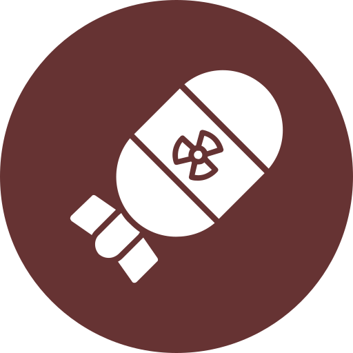

 수질 및 토양 오염
ASIA
EUROPE
AMERICA
OCEANIA
AFRICA
러시아 제르진스크는 구 소련의 화학무기 개발을 포함한 러시아의 핵심 화학 산업 지역으로,
1930년과 1988년 사이 30만 톤의 화학 폐기물이 제르진스크에 버려진 것으로 추정된다.
유출된 침출수에서 190가지의 유해 화학 물질들이 검출되었다.
기네스북에서는 제르진스크를 세계에서 가장 오염이 심한 지역으로 등재하였다.